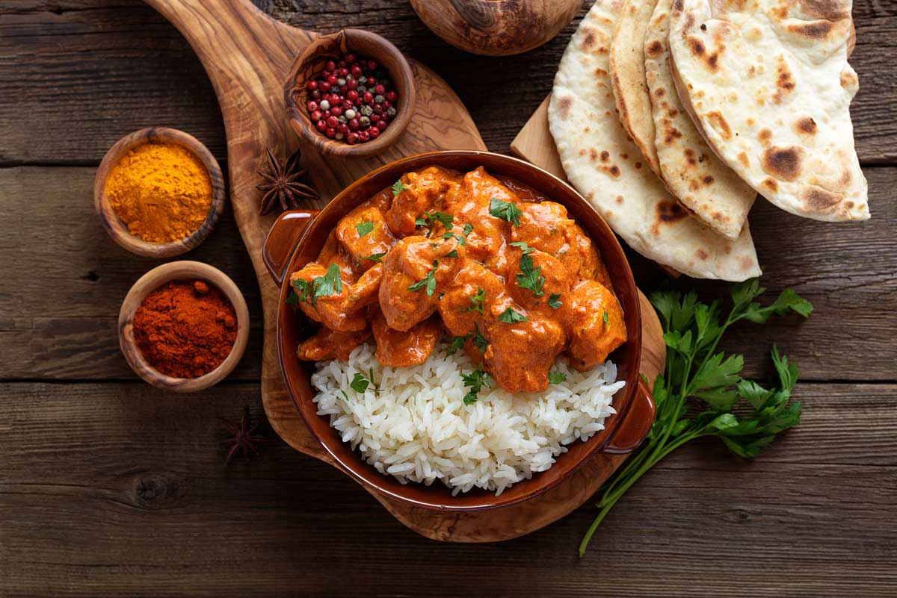

Home
Butter Chicken

Description:
Butter chicken, also known as "murgh makhani," is a popular Indian dish that consists of chicken cooked in a rich, creamy tomato-based sauce. It is known for its mildly spiced and slightly sweet flavor, making it a favorite in Indian cuisine
Ingredients:
- 1.5 lbs boneless, skinless chicken thighs or breasts, cut into bite-sized pieces
- 1 cup plain yogurt
- 2 tablespoons lemon juice
- 2 teaspoons garam masala
- 1 teaspoon ground turmeric
- 1 teaspoon ground cumin
- 1 teaspoon ground coriander
- 1 teaspoon chili powder
- Salt, to taste
- 3 tablespoons butter
- 1 large onion, finely chopped
- 3 cloves garlic, minced
- 1 tablespoon grated fresh ginger
- 1 (14-ounce) can tomato puree
- 1 cup heavy cream
- 1 teaspoon ground fenugreek (optional)
- Fresh cilantro, chopped (for garnish)
- Cooked basmati rice or naan, for serving
Directions:
- In a large bowl, combine the yogurt, lemon juice, garam masala, turmeric, cumin, coriander, chili powder, and a pinch of salt. Add the chicken pieces and toss to coat. Cover and refrigerate for at least 1 hour, preferably overnight.
- Preheat your grill or broiler. Grill or broil the marinated chicken pieces until they are cooked through and slightly charred on the edges. Set aside.
- In a large skillet or saucepan, melt the butter over medium heat. Add the chopped onion and cook until softened and golden brown, about 5-7 minutes.
- Add the minced garlic and grated ginger to the skillet and cook for another 1-2 minutes, until fragrant.
- Stir in the tomato puree and bring the mixture to a simmer. Cook for 10-15 minutes, stirring occasionally, until the sauce thickens and deepens in color.
- Reduce the heat to low and stir in the heavy cream. Add the grilled chicken pieces and simmer for another 10 minutes, allowing the flavors to meld together. If using, stir in the ground fenugreek.
- Taste and adjust seasoning with salt if needed.
- Garnish with fresh cilantro and serve hot with basmati rice or naan.